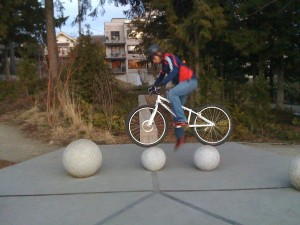

Sketchup Images of the Corner Store and Morgan’s Design
We are lucky to have people with talent from Barker’s team (Nic Morin) and community member Morgan Hougland on board. I couldn’t have done this work, but they both produced Google Sketchup images of differing concepts for the park entry in the northeast corner. Here they are side by side (actually top to bottom). Morgan’s design echos the existing seatwall to continue themes already in the park. Barker’s design pays homage to the corner store that used to be located on the site. Barker asked one of his staff, Nic (thanks, Nic!), to show both designs in the exact same perspectives for a true side by side comparison. Morgan’s design is labeled “Seatwall” and Barker’s corner store design is labeled “Corner Store”. The images are thumbnails; click on them to enlarge. What do you think? Which one do you prefer? Why? What do you like about each design? Please add a comment below; we really do want to know what you think.
If possible, please let us know what you would do with the donor tiles (4″x6″), large donor plaque, historical photos, and oral histories if the columns are not part of the design.
{kind=link}
Seatwall 1

Corner Store 1
{kind=link}
Seatwall 2
{kind=link}
Corner Store 2
{kind=link}
Seatwall 3

Corner Store 3
{kind=link}
Seatwall 4
{kind=link}
Corner Store 4
If you want to play to with the actual sketchup file, here it is. If you don’t know what Google Sketchup is, don’t worry. It’s a program with a free version that Google has produced to render such images. Curious? Download it here.
To encourage comments on this post, and the blog, we’ve disabled “login required” to comment. You’ll still have to answer a math problem (to combat spam), but please comment on this post
Posted on May 10th 2009 by David Folweiler in Design | 47 Comments So Far |
May 12th, 2009 at 7:35 am ()
Ballard Corners Park has turned out so well! What a great improvement to the neighborhood and use of the space.
I was so pleased with the open feel of the grass meeting the sidewalk as it is right now; it really invites you into the park.
I appreciate the backstory to the “corner store” concept, but now that the park is open, it seems a shame to add any hardscape on that corner that cuts it
off from the street. Plus, the couch & chair have turned out so fantastic! Another significant hardscape element seems would distract from the unique livingroom and clutter the small park.
The park is perfect the way it is! If you have to do something, then the low seat wall around the very edge to maximize the open grass space would be least distracting element proposed. Will be curious to see what you decide to do.
May 12th, 2009 at 7:44 am ()
I’m a huge fan of the “Corner Store” design. I’ve never seen anything like it in a park before, and think it will make this park even more “special”.
May 12th, 2009 at 9:32 am ()
I like Morgan’s style much better. The one thing I prefer about Barker’s is I like the idea of the counter and stools, esp. since I have commented the park could use a bit more seating.
That said, I REALLY don’t like those columns in Barker’s design. I don’t think they match the rest of the design of the park at all- there is something almost jarring about them.
For photos, etc. I would probably say my first choice is a separate sign of some sort. Second choice- tiles on the top of seatwalls (I don’t think people will read them if they’re on the side).
re: the seatwalls being curved vs. straight: I prefer them curved. I think it’s more inviting.
May 12th, 2009 at 12:47 pm ()
I have driven past the park several times since the fence came down and am still of the same mind. I don’t think that it needs one more design element. It is not the world’s biggest park and as it stands now, it is very open and inviting. It provides a contrast to the buildings all around just by being open space.
I am a history buff and am all for keeping neighborhood structures from the past and honoring them. In this case I think that a small plaque on a rock would suffice. Let’s let the park speak for itself and be open.
May 12th, 2009 at 2:49 pm ()
I like aspects of both designs. I think the park could use a design element to mark the corner. The seatwalls and stone in Morgan’s design is alluring because it is consistent with other elements of the park. The simplicity is lovely and allows the play structure to shine as the dominant sculptural piece at the north end of the park. Also, after seeing so many people flock to the park since it has opened, I know that it will be a very social place and I think that providing more opportunities for people to sit will be desireable. I’m not crazy about the detailing of the corner store, particularly the base of the columns, but I think the vertical element is dynamic and will be interesting and colorful with the tiles and historical description.
May 12th, 2009 at 3:12 pm ()
I prefer the more simple design without the columns. The columns seem to visually cut-off the park. I like the idea of more seating. I like the rounded corners of the benches.
May 12th, 2009 at 9:46 pm ()
I like the idea of the corner store with swivel seats, but after looking at the sketches I prefer the low seating design for continuity and openness. I also think the low walls would be great for reducing some of the balls that are getting into the roads now. It’s well used since opened and many a child’s ball has gone off into the street. It’s the one pause I’ve had about the park so far. Kids and parents are going to toss balls to each other and one more unobtrusive barrier to reduce the times the balls end up in the street seems like a good idea.
May 13th, 2009 at 9:32 am ()
I really like the idea of a corner store. I like the counter for eating lunch, visiting with neighbors playing “store”, reading the newspaper, or just watching the kids play. I can picture kids running a lemonade stand or playing on the swiveling stools.
If Nathan Arnold (the artist who did the furniture) does the corner store, he could add some whimsy.
I think the columns would be a great place to put the donor tiles and the historical photos. If we don’t build the columns, I don’t see a great place to put them otherwise. The vertical surfaces of the seatwalls seem too low. The tiles are too slick to be put in the ground. The columns would put the photos and other info at eye level, which seems ideal.
There was a corner store on the northern portion of the lot and I think it would be great to honor it. The corner store element does this. The seatwalls do provide needed additional seating, but they don’t represent the old corner store in my mind.
I also noticed that the corner store appears to have a smaller footprint than the seatwall design. If folks are worried about losing grass, perhaps the corner store might do better.
May 14th, 2009 at 7:24 am ()
I think there are too many curved seatwalls in parks around here, and that the corner store is what makes this park unique. The columns and the counter and round seats can make the history visible, especially with historic pictures and interpretation. They add unique seating and play opportunities. And the corner store has been scaled down to occupy less of a footprint than the curved suburban looking seating wall.
May 14th, 2009 at 8:46 am ()
I really like the corner store concept, and I think the counters with the swivel stools are delightfully imaginative. I like the defined sense of entry the corner store concept provides. With the historical photos and donor tiles on the columns and counter tops this entry will have even more meaning and historical significance.
I think the curved seatwall concept is elegant, but it’s missing the unique character and historical significance of the corner store. Also I think adding more curved seatwalls imposes too much of this theme on the park and overwhelms the other elements of the park.
I think it’s important to mark the NE corner entry to the park in some way, rather than leave it open as it is now. I think the corner store serves this purpose in an imaginative and historically significant way.
May 14th, 2009 at 10:07 pm ()
We have been excited about the opening – especially our 2 year old granddaughter. While it is interesting and fun to look at, there are few things for a 2 year old to do at this park. She was disappointed and kept
asking where the swings and slide were. She did mention the pretty flowers.
The play equipment is interesting to look at but can be used by maybe two kids at a time and it is not set up for young kids at all. Our granddaughter tried to play on the lower part but another kid kept climbing up and coming through the top and nearly kicking her in the head as it is awkward to see that there is someone below. Even with very polite children and alert parents, this play equipment is less than ideal.
The couch, chair and lamp are very unusual and fun but also not practical. The people sitting in the “living room” when I was there were sitting on the floor because they said that the couch and chair were not enjoyable to sit on.
So, I have to say that the park is much nicer to look at, photograph and talk about than it is to play or sit in. The dearth of benches and other places to sit creates a situation that we experienced – some demonstratively enamored teenagers sitting on the wall in the play area doing things that were not wonderful for the children in that area to witness (nothing obscene, just something that would have been more appropriate on a park bench outside the kid’s area). A few more park benches or comfortable places to sit outside the kid’s area might alleviate that.
We will have to go to other parks to play with our granddaughter – which is too bad since this park is so close to our house and the other parks are a bit of a walk. So, I have to say that I am a bit disappointed with the park.
I’m guessing that the personalized bricks will be put in sometime, soon. We will look forward to that.
Yes, my granddaughter will get older but then I will have her younger brother with nothing to play on so will have to go elsewhere for more years.
I have to say that having children vote on play structures removes the possibility of much support for structures geared for young children. And I don’t know what considerations children would give to safety and usability issues. My guess is that the kids voted on how interesting the equipment looks not how well it works for multiple kids.
About not accommodating young children – I’m guessing that it is the parents of young children who are most likely to be at home with them and able to spend weekdays in a park. Other parks in the area are often full of young children during weekdays while older children are at school. And, we have all seen older children playing on slides and swings that are designed for younger children. While the other way around doesn’t work. So, I’m sorry but I don’t see the basis for the reasoning that excludes equipment suitable to younger children. Nor do I see why there is so little comfortable seating.
I have no problem with your putting my comments on your blog but rather than it being a serious of useless complaints, I would hope that it might lead to something. My guess is that there are many kids in this area who are under 4 years old and not in school during the day and that adding even one small piece of equipment designed for them would increase the use of the park for many families. There seems to be plenty of room for one slide or one small structure that 2 to 4 years olds could safely climb. After all, many families who have older kids also have younger ones at the same time and going to a park that only works for the older ones means that the younger ones won’t want to be there, or will be in a situation where they want to play on the equipment but cannot. This leads to frustration – which is how I feel with this attractive, interesting, nearby park.
There was obviously much thought and effort that went into the planning and execution of this park and am sorry to be putting a damper on this but you did ask. I have spoken to a few people who feel the same way as I do but none of them is willing to say anything about it because they feel that unless they were in on the work, they don’t have the right to disparage it. I reiterate my feelings that this is a lovely, interesting park that will likely win design awards and bring much press and interest to all involved. I am sorry that it will be several years before my family and others will get much use out of this very conveniently located facility.
May 15th, 2009 at 4:54 am ()
I like the corner store. While I could quibble w/ some of the design details (and I’m encouraged by David’s suggestion that there is still room for refinement), I like the way it defines the NE corner, provides another place to sit and gather, frames views into the park, and offers opportunities for the tiles, plaques and other interprteive elements. Maybe even something for small kids to cruise and climb on (I don’t think we always need to build separate playstructures for every age group – kids often gravititate to other elements, anyway, and anyone can bring their own toys and play with them on the lawn and other spaces).
I understand Morgan’s desire to unify the park and other’s concerns about too many different elements in a small space, but I like the “collage” effect. By creating many distinct spaces in a small area you can actually make it seem and function as a larger space.
As for the low number of responses David alluded to in his recent email, a couple of thoughts. Many, many more people were involved in all the design work that led up to the plan that included the corner store. I wasn’t involved in that part so much, so I don’t know to what degree there has always been some division about this element. There is something to be said, though, for staying the course and honoring the design concept that so many participated in, unless there is a major groundswell to pursue another path.
Also, sometimes these decisions do come down to the few who cared enough to comment and the even fewer who have dedicated so much to creating the park. To those, I applaud the effort to get broader input, but would say to feel free to follow your convictions and choose the solution that seems right to you.
Whatever the choice, it will be positive addition to a wonderful park that I hope will continue to evolve and develop as new folks get involved and make the park their own.
May 15th, 2009 at 6:40 am ()
Love the park!!!!!!
The living room makes it one of the most unique small parks in the City. I know the corner store would also be a great asset to the park and give a neat place for our community to sit, eat and talk about old times.
Great Job!!!!!
1 vote for the store!!!
May 15th, 2009 at 7:05 am ()
I still love the idea of the corner store. I think it pulls together elements of the history of the neighborhood. It’s attractive, fun and provides a place for others to learn (via photos etc) about the history of ballard.
All in all it is a beautiful park!
May 15th, 2009 at 7:13 am ()
The park looks beautiful and it is getting lots of use! I had no idea how many kids live nearby!
I really like the park as it is, I would hate to give up green space for more hardscape. The tiles and historic info can go on the small foundation walls, the raingarden sign can go on the edge of the raingarden, major donor recognition can go on a small sign or (as someone else suggested) on a boulder.
May 15th, 2009 at 7:40 am ()
I like the idea of the corner store. I agree with Deb Hamilton that it serves to pull everything together. The columns serve to frame the entry and the project.
I don’t like the idea of putting donor recognition in a separate area. That is what is often done on other sites and as a frequent contributor to such projects, I feel cheated and as a result, I haven’t donated to this project.
May 15th, 2009 at 7:43 am ()
I am delighted to be a part of this project. I am so happy my grandson and all my adpoted grandchildren will have this space to enjoy.
The historian in me loves the corner store. Perhaps with slightly smaller pillars.
I am not opposed to the low seating option either.
I am thankful for the people who have worked so hard for all of us.
May 15th, 2009 at 7:46 am ()
Although I like the look of the seatwall a bit more, I really love the idea of teaching/reminding neighbors about the history of this location with the store. So I choose corner store. I agree that perhaps the columns can be retooled a bit – something simpler would be great.
Thanks to everyone that has worked so hard on this park!!
May 15th, 2009 at 8:03 am ()
Definite the corner store! Attached is a photo that I took today of some ladies enjoying your park. The corner store would get used too. It would be a great place for neighbors to have lunch together. Because your park goes right on the corners, you don’#39;t have to worry about nefarious activities going on in the corner store, so that seating would be terrific. The seat walls are nice around the play area, but I wouldn’#39;t put many more in. I’#39;ve attached another picture that shows that trials bike riders love challenges (which I respect) and might hang out on your seat wall. The corner store seating would be much better for that spot and your tiles would have a nice prominent place to be.

May 15th, 2009 at 8:14 am ()
thanks for the prod. seatwall
May 15th, 2009 at 8:27 am ()
I like the look of the seatwall and think it would be quite functional. BUT, the corner store is unique to our park and provides some history, and would still provide some function. So I vote for the corner store.
May 15th, 2009 at 8:35 am ()
I really like the park the way it is now, I’ve seen people sit on the grass and visit, so I don’t think extra seating seems necessary. I love the openness of the park and the awesome living room furniture-for me, the park is perfect. Thanks for all your hard work!
May 15th, 2009 at 9:16 am ()
The opening of the park has been a source of great excitement in the neighborhood and for my family. My kids listen for other neighborhood kids in the park and then run over to play. They ride bikes around the loop and play catch. It is a beautiful and quite functional gathering space.
The Store is a great idea and I would like to see it done. Though it is unnecessary, it will balance the park elements nicely. If this were a project in my own home, cost would probably be a major factor. What is the cost difference between the two projects? If it is not cost prohibitive, I say build the store.
May 15th, 2009 at 9:45 am ()
Thanks for all your work!
I think the Corner store idea is really cool and unique – the pillars don’t work as well for me aesthetically at this point, but the stools and counters are great!
May 15th, 2009 at 9:50 am ()
I feel the corner store is important because like the living room it will engage and encourage community connection to the park. The linear nature of the park lends itself to the creation of a unique series of experiences, of which the Corner Store is an important one. The curvilinear bench, although a nice thought, has no connection to the community process or history of the site. It abandons the opportunity for a unique and lively experience at the corner. I would rather see an open corner or the Corner Store.
The corner store has now been whittled down to a light unobtrusive playful rendition of the original concept. Along with the opportunity for comfortable picnicking, lemonade sales, games, and informal play, it may provoke a sense of nostalgia and curiosity, as Nathans living room has already done for so many. These engaging elements create a bond between past and present, and recall the evolution and history of the site. Pulling from past use, letting it guide present design and inform the future – this often enriches a place like no other. I feel this is a core element of Ballard Corners Park.
May 15th, 2009 at 10:00 am ()
Thanks to Barker & CO for the effective Sketchups.
I really prefer the Corner Store. It is a unique element that makes sense for the park in so many ways.
** It is a dynamic nod to the heritage of the area that is a good looking book-end to the park that provides balance to the design and layout. I think the swivel stools are fun and will be a favorite piece.
** I think a gateway/threshold to a special place is desirable and the columns provide a natural, eye-level place to display the history including the most recent efforts via the tiles. The columns or almost archway are so inviting to me.
** The Corner Store provides a small amount of additional seating and table (like a park bench) that will benefit a variety of activities for all ages == elderly pauses, lunches, refreshments, games, reading, watching.
** With the columns, we could hang a screen and have a movie night in the park.
++
** I want to preserve grass area too and I had noticed that the corner store is more compact.
** On that note, I’d like to see it positioned as close to the sidewalk as appropriate, and I would like to recommend that we pull the tile layout back so it doesn’t extend so for into the grassy area of the park. Like pull it back four rows of pavers on the shown sketches.
** I like curved, organic shapes but I think having the curved seat wall would be too much of it, too dominant.
I love the family room, the plantings, the rain garden, the great trees, the play structure; but most of all I love all the great people I have met because of it and their community-minded, pitch-in spirit. There are a lot of great pocket parks to compare Ballard Corners Park with and I think we have built one of the best; hands down, shovels down, let’s play!
All the best to us Ballardians,
Pete Pitcher
May 15th, 2009 at 12:56 pm ()
Put the corner in Ballard Corners! How can we say, “meet you at the corner store”, if it’s a curved seat wall? It’s elements like the living room that make the park unique and fun. Let the artist continue and balance out the park with an imaginative entry way that hearkens back to old Ballard.
May 15th, 2009 at 1:46 pm ()
My vote is for the seatwall. While I love the idea of giving a sense of history to the corner with the store elements, I feel that there is already quite a bit of hardscaping in the park and I’d like to preserve more open space.
Whatever the final decision, I think the park is a beauty. It is clearly a huge asset to the neighborhood and in the brief time I’ve been there, I have met more new neighbors than I thought possible.
May 15th, 2009 at 2:34 pm ()
My intention is to go look at what has been done because it sounds like your group has done a lot of hard work. Thank you for that. My choice would be the corner store and until I go down there I’m not sure where the tiles, etc. should be, but I do prefer the corner store idea. It has pleasant memories for me. I’ll try to go past the garden in the next couple of days.
Thanks for all you are doing.
May 15th, 2009 at 3:36 pm ()
I think the park is fine as is. If we have to pick something then I pick the option that is least expensive. Also, I was wondering if they were going to put anything on the 62nd side or if that is kind of the nuts and bolts area of the park like the electrical boxes etc. I just couldn’t remember. That’s cool if it is going to be as is also. Thank-you for your help.
[It turns out Kelly was referring to the community tended garden, which is in place under the nut tree. – editor]
May 15th, 2009 at 3:47 pm ()
Curved seat wall+1
May 15th, 2009 at 6:50 pm ()
I like the corner store idea. In a Ballard that is changing (for better or worse is up for debate), it’s nice to pay homage to the Ballard of old days. That people in the future might look at it and realize that Ballard, at one point in time, wasn’t covered in condo buildings, boutique pet stores, and tanning salons.
I feel like the extended wall idea limits the “openness” of the park that is nice right now. You can just walk into the grass no matter where you are on the sidewalk… instead of having to step over a small wall. Also, I’m thinking back to being a kid of 8-9 years old, and playing front yard football with my friends… and man, that wall would have been annoying during a pickup game of tackle football.
I also like the idea of the columns, bc maybe down the road there could be a nice iron lattice or ornate threshold connecting the columns… maybe it could say “Ballard Corners Parkâ€â€¦ and be covered in ivy.
Yeah, I’#39;m not necessarily a fan of how much grass will be taken up by the amount of concrete with the corner store.
May 15th, 2009 at 9:07 pm ()
I think both options are attractive and either would be fine. However, I prefer the Corner Store because it is fun, imaginative and unique. I think it would be a great gathering and play place and I love the idea of having historical plaques there. The columns do seem rather large in proportion to other elements and I would prefer it if they could be scaled down.
Personally I like the fact that the park does not have the traditional slides and swings. It encourages imaginative play. Most kids get tired of park equipment and make up their own games pretty quickly anyway.
May 15th, 2009 at 9:21 pm ()
a) I think the raingarden plaque is a no brainer – I think there should be a small riverstone column (c2 feet high) built near the bench with the plaque put on top at a 45° angle. i.e. the raingarden plaque, *in* the raingarden.
b) after extended consternation I think that Morgan’s is better, I think the Corner Store-lite (and I *love* the stools) is just one concept too many and too much concrete on the entrance way. My heart would not break with the Corner Store as it also adds much but I think it takes a lot of the green away. So dealing with Morgan’s issues:
1) we need better definition on whether it meets any disable access needs.
2) I think the “rock” on the right of the main entranceway can be bigger and have the founder’s plaque embedded into it (12×12 right?) horizontally.
3) I think the seatwalls should be built such that the sponsor tiles and historical information can be placed on the outside. This is a little low, but it does face outwards for visibility and it interest from the street, and does not have plans in the way. We may need to rework the historical information to do this, and we may need to “uncurve” the seatwall such that there is a sequence of flat surfaces – ultra-dodecahedron?
Oh, and I think the bench is great, I’d love another one on the south section of the raingarden too 😉
In reference to the comments about the play structure, and having one of the younger children who cannot play on it yet, I am happy with the compromise: there are a few parks around that will work for toddlers, but when there is only one play structure (which is all we have space for), the structure that is in the park works for a broad age range and gives the park some staying power, whereas having a single younger-oriented structure would reduce it’s attraction IMNSHO.
May 16th, 2009 at 7:30 am ()
My first response was to leave the park as is. There are already enough elements and even seems a little tight in open space. After using the park a few times it would be nice to have more places to sit. With places to sit and linger it seems to encourage gathering. When we sat in the living room people would come by and join us and we had more time visiting with neighbors. When the family came to visit they all had to sit on the one bench. If I had to chose one it would be the seat wall. Or maybe just a couple more small benches like the other one. The tiles could be but in the living room as the rug or in the sidewalk on the north or south side of the park.
May 17th, 2009 at 10:59 am ()
i think the park is coming along nicely, but it seems imbalanced without something at the other end from the living room. personally, i like the corner store idea; i think it’d balance the park aesthetically, and i think it’d be nice to recognize the long presence of the neighborhood corner store there.
May 17th, 2009 at 10:50 pm ()
Stopped by the park for the first time today, It looks so wonderful!
I like the idea of the corner store, and especially some extra seating (lunch area)– I think its just the columns that I’m not responding to.
I asked my Nana if she’d ever been to that store and she said probably, but she couldn’t remember for sure(she’s 89, so that fair)
Looking forward to seeing my tile there!
May 17th, 2009 at 11:43 pm ()
I don’t understand the “extra seating” argument. Can’t the half-walls that are used around playground, and along the back sidewalk be used as sitting areas? I mean, unless people are talking about seating with backs on them.
And how can you complain about the couch and chair being uncomfortable? You do realize those aren’t actual pieces of leather furniture, don’t you?
I also am kind of in agreement that the park looks complete the way it is. I saw a few kids playing soccer out there earlier today, and the way they were playing, a corner store or extended wall would have hampered their fun.
May 18th, 2009 at 9:52 am ()
I think I’m leaning towards the seatwall. I fear the stools would have additional maintenance needs due to normal use as well as that of vandalism. The simpler design of the seat wall seems less fraught with potential problems. Additionally, I like the look of the seatwall. Ideally I’d like the seatwall with the columns but not the stools.
In terms of where to put the donor tiles, that’s more difficult. Could they be embedded in the top of the seatwall? What about along the sides of the seatwall? What about on the ground just inside of the seat wall as depicted in the in the attached picture? (the attached picture contains a couple possible locations)
Those are my 2 cents.
[David’s notes: The tiles, in their current design, are too slippery for a walking surface. It’s possible they could be modified; I’m unsure of the ramifications of doing that.]
May 18th, 2009 at 11:23 am ()
I prefer the seat-wall to the corner store, because it would provide useful seating and edge definition without creating a kids-forehead level impediment to rambunctious play in the northern grassy aree, and because it nicely echoes the low wall around the play structure.
Rather than dispensing with the corner store columns, however, I suggest moving them to flank the path at the northwest entrance, where they can house the donor tiles etc.
May 18th, 2009 at 2:33 pm ()
Of the choices given I like the corner store entrance. I would prefer that there wasn’#39;t any art in the parks, at least small ones with limited space such as Ballard Corners. To me the most beautiful art there could possibly be are nature’s own trees, bushes, annuals and perennials. I want a passive park experience, not an active one. However, given that in Seattle, it seems that any new park HAS to have art (and a children’s play area), I like the corner store.
I want the seating areas underneath the shade of deciduous trees. I can’t take the sun anymore and won’t use any areas not shaded (which is why I have little or no use for the Ballard Commons except in winter–a pity indeed).
May 18th, 2009 at 10:28 pm ()
I think the park looks great so far lots of green space. I agree with you David, that the corner store concept is a tribute to the historical aspect of the park. I think the pictures & tiles should be worked into that part. It was a small store not a soda fountain, maybe something of weathered wood with a place undercover for the photos & tiles. It doesn’t have to be large, a couple of columns & a roof. I don’t think that the history part should be forgotten, some of us are old enough to remember.
May 18th, 2009 at 10:35 pm ()
If I’d never seen the corner store option before I’d really like Morgan’s design because of the flow and the adding of additional seating. It’s a nice idea and well thought out but I guess because I’ve already had the corner store in mind I still like that one best.
I like the store concept because it adds a table element to the park, which seems like a great addition now that the park is finished. With reflections from our usage so far, I’d definitely like the addition of the stools and tables because right now my son’s favorite thing is to play at the bike rack. He’s too little for the play structure, walking along the cement wall gets boring quickly, but the bike rack has the different stalls he can walk around and hold onto. He’d be able to do the same thing at the stools and I could sit! I realize someday (someday!!) he’ll actually be walking and that won’t matter as much but I’m thinking for the little guys the tables/stools would add an additional play area, as well as adding it for the older set as a pretend play area. Also when my son and I have gone we’ve laid out a blanket but that wouldn’t be quite as convenient for eating.
May 19th, 2009 at 8:49 pm ()
There are so many great thoughts and positive reactions out there, that I think this is wonderful and also very difficult. People are emotionally attached to their ideas. The clear majority are interested in a historical reference, and many of those really like the corner store. As I did before the design got a bit complicated stylisticly and beyond our budget. I also think the scale issue is valid. No easy way out.
I expressed my design opinion last time we met. Some kind of lighter structure that has ceramic faced panels built in to capture the history, and can be a living design element. Less concrete, no concrete walks – perhaps using the cinder path/edging. I do think there needs to be something at the corner. I don’t want to do another design though, unless it is with the steering committee using Morgan’s talents to facilitate a shared concept.
Not much help ehh? Sorry. Design seldom can satisfy everyone. The good point is that we have 90% done to wide acclaim.
And to the wonderful grandmum who lamented nothing for her 2 yr. old to do. I’d suggest she keep coming back, that active play structures are far from the only way to enjoy the park. Lead her grandaughter over to the apple tree south of the play structure to hang from the limb, walk the short wall, roll in the grass, and ask grandmum to read her a story curled up on a blanket under the twisting pear tree.
May 20th, 2009 at 11:31 am ()
I like it [the corner store]. I like how the corner store option looks in the picture. It adds a nice touch-whimsical and respectful of history. Very good.
May 21st, 2009 at 12:35 pm ()
The park is very nice right now. But I do like the idea of the corner store because of it’s historical significance. It also makes the park unique. I also don’t see a good spot to put the donor tiles without it.
May 25th, 2009 at 12:10 pm ()
OK – After reading everyone’s comments I think that while it is nice to get everyone’s comments – the committee should follow the vision that they worked so hard on…the corner store.
For what it is worth…with smaller columns – closer to the road.
Also, after reading the “Grandma of 2” comments – some small benches would be a nice thing as well.
Most importantly, the time & energy the planning committee has done on this should be honored by following the vision that came from hours and hours of work & meetings they put into this.
While it is nice to be asked about this – thank you – I feel that most of these decisions were made already and we should respect what the committee decided upon (or we should have gone to the meetings).
Thanks for asking – I love the park & am very happy to have something so nice to my home.